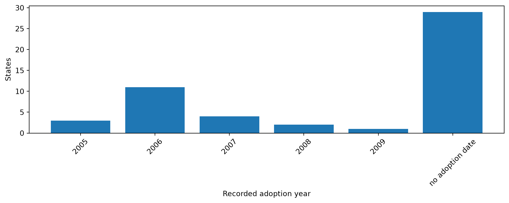
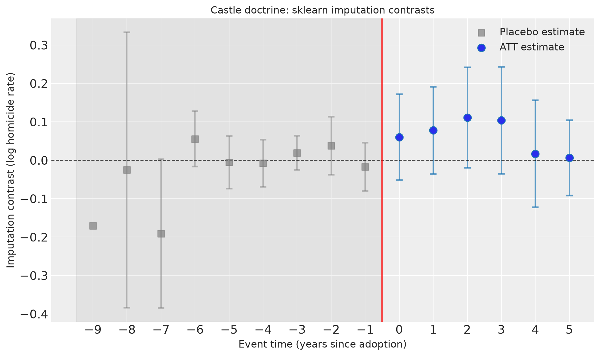

import warnings
warnings.filterwarnings("ignore")
import numpy as np
import pandas as pd
import matplotlib.pyplot as plt
import causalpy as cp
import sys
sys.path.insert(0, "../src")
from mixtape_causalpy import load_castle, load_abortion
%matplotlib inline
%config InlineBackend.figure_format = 'retina'Chapter 9: Difference-in-Differences
Causal Inference: The Mixtape → CausalPy
Mixtape chapter: Difference-in-Differences
CausalPy method: StaggeredDifferenceInDifferences for the castle-doctrine panel. DifferenceInDifferences estimates one group-by-post interaction. It is not the castle result.
Overview
Adoption dates in the castle-doctrine panel are not a single year. A two-group, two-period coefficient is the wrong estimand for that design, and it is not what this page reports.
The required fit below is the Borusyak, Jaravel, and Spiess imputation estimator (Borusyak et al. 2024). The untreated outcome is cp.pymc_models.LinearRegression on state and year fixed effects. It is not Cheng and Hoekstra’s two-way fixed-effects coefficient (Cheng and Hoekstra 2013), and it is not castle_1.py.
Snow, the minimum wage, block bootstrap, clustering, the Affordable Care Act, and maternity benefits have no script on this page. No dataset is added for them.
Setup
Castle doctrine
castle.dta is a state-year panel. treatment_date is the adoption year, and it is missing for states with no recorded adoption. The outcome used here is l_homicide, the log homicide rate.
DifferenceInDifferences estimates a single group-by-post interaction. That is not this panel, and it is not used as the result.
Adoption timing
castle = load_castle().copy()
castle["treatment_time"] = castle["treatment_date"].astype(float)
n_missing_dates = int(castle["treatment_time"].isna().sum())
castle.loc[castle["treatment_time"].isna(), "treatment_time"] = np.inf
timing = castle.groupby("state", as_index=False)["treatment_date"].first()
n_states = int(timing["state"].nunique())
n_years = int(castle["year"].nunique())
n_never = int(timing["treatment_date"].isna().sum())
panel_start = int(castle["year"].min())
earliest_adoption = int(timing["treatment_date"].min())
timing["adoption"] = timing["treatment_date"].apply(
lambda v: "no adoption date" if pd.isna(v) else str(int(v))
)
year_order = sorted(y for y in timing["adoption"].unique() if y != "no adoption date")
adoption_counts = (
timing.groupby("adoption").size().reindex(year_order + ["no adoption date"])
)
print(
f"{n_states} states, {n_years} years, {n_never} with no adoption date"
)
print(f"Panel starts in {panel_start}; earliest recorded adoption is {earliest_adoption}")
print(f"Missing treatment_date rows before recode: {n_missing_dates}")
print(adoption_counts.to_string())50 states, 11 years, 29 with no adoption date
Panel starts in 2000; earliest recorded adoption is 2005
Missing treatment_date rows before recode: 319
adoption
2005 3
2006 11
2007 4
2008 2
2009 1
no adoption date 29fig, ax = plt.subplots(figsize=(10, 4))
ax.bar(adoption_counts.index.astype(str), adoption_counts.values, color="C0")
ax.set_xlabel("Recorded adoption year")
ax.set_ylabel("States")
ax.tick_params(axis="x", rotation=45)
plt.tight_layout()
plt.show()
The file stores a missing treatment_date for 29 states. StaggeredDifferenceInDifferences rejects missing treatment times. It does not read a missing date as never-treated. Those dates are recoded to np.inf, the class default for never-treated, before the fit. The states stay in the panel and are the never-treated controls. None are dropped.
There is no already-treated cohort in the first year. The panel starts in 2000 and the earliest recorded adoption is 2005.
Imputation event-time contrasts
The required formula is state and year fixed effects. C() accepts the numeric year column, so year is not recoded to a string. The 1 in the formula is the intercept column of the design matrix. cp.pymc_models.LinearRegression fits that matrix. It does not add a second intercept.
post is an absorbing 0/1 column in the file. It is not passed as treated_variable_name. The absorbing-treatment check runs only when that argument is passed. l_homicide has no missing values, so there is nothing for a missing-outcome check to drop. The class’s missing-value check on a treated column is about the treatment indicator, not the outcome.
StaggeredDifferenceInDifferences has no weight argument. popwt is not passed, and this is not the book’s population-weighted least squares.
Draws, tune, chains, and cores are the library defaults. sample_kwargs keeps progressbar, random_seed, and target_accept=0.95. That target_accept is the one raise already in this file, after a default-length render with max r-hat 1.0375 and min bulk ESS 73. nuts_sampler is omitted, so the installed nutpie sampler is selected.
bayes_result = cp.StaggeredDifferenceInDifferences(
castle,
formula="l_homicide ~ 1 + C(state) + C(year)",
unit_variable_name="state",
time_variable_name="year",
treatment_time_variable_name="treatment_time",
never_treated_value=np.inf,
model=cp.pymc_models.LinearRegression(
sample_kwargs={
"target_accept": 0.95, # default-length render: max r-hat 1.0375, min bulk ESS 73
"progressbar": True,
"random_seed": 42,
}
),
).fit()
import arviz as az
rhat = az.rhat(bayes_result.idata).to_dataset()
max_rhat = float(np.nanmax(rhat.to_array().values))
n_div = int(bayes_result.idata["sample_stats"]["diverging"].sum())
min_ess = float(
np.nanmin(az.ess(bayes_result.idata, method="bulk").to_dataset().to_array().values)
)
print(f"max r-hat {max_rhat:.4f}, divergences {n_div}, min bulk ESS {min_ess:.0f}")
bayes_result.summary()
bayes_att = bayes_result.result.att_event_time
bayes0 = bayes_att.loc[bayes_att["event_time"] == 0].iloc[0]
bayes_m1 = bayes_att.loc[bayes_att["event_time"] == -1].iloc[0]NUTS[nutpie]: [beta, y_hat_sigma]Sampling: [y_hat]
Sampling: [y_hat]
Sampling: [beta, y_hat, y_hat_sigma]
Sampling: [y_hat]max r-hat 1.0387, divergences 0, min bulk ESS 73
======================Staggered Difference in Differences=======================
Formula: l_homicide ~ 1 + C(state) + C(year)
Number of units: 50
Number of time periods: 11
Treatment cohorts: [np.float64(2005.0), np.float64(2006.0), np.float64(2007.0), np.float64(2008.0), np.float64(2009.0)]
Never-treated units: 29
Event-time estimates:
event_time type att att_lower att_upper n_obs identified
-9 placebo -0.172163 -0.292986 -0.055180 1 True
-8 placebo -0.026239 -0.101534 0.046982 3 True
-7 placebo -0.191765 -0.246058 -0.137004 7 True
-6 placebo 0.055053 0.014062 0.094918 18 True
-5 placebo -0.004914 -0.042335 0.031549 21 True
-4 placebo -0.007252 -0.044007 0.029850 21 True
-3 placebo 0.019678 -0.018137 0.056623 21 True
-2 placebo 0.038534 0.000749 0.076074 21 True
-1 placebo -0.016540 -0.056737 0.024518 21 True
0 ATT 0.060592 0.014382 0.106220 21 True
1 ATT 0.078177 0.027685 0.127444 21 True
2 ATT 0.111283 0.054946 0.167128 20 True
3 ATT 0.104562 0.044942 0.163653 18 True
4 ATT 0.017331 -0.051696 0.086410 14 True
5 ATT 0.007049 -0.103810 0.117415 3 True
Model coefficients:
Model coefficients:
Intercept 2, 94% HDI [1.8, 2.1]
C(state)[T.Alaska] -0.26, 94% HDI [-0.46, -0.059]
C(state)[T.Arizona] 0.036, 94% HDI [-0.18, 0.23]
C(state)[T.Arkansas] -0.13, 94% HDI [-0.29, 0.069]
C(state)[T.California] -0.12, 94% HDI [-0.29, 0.062]
C(state)[T.Colorado] -0.71, 94% HDI [-0.88, -0.53]
C(state)[T.Connecticut] -0.79, 94% HDI [-0.97, -0.62]
C(state)[T.Delaware] -0.56, 94% HDI [-0.73, -0.38]
C(state)[T.Florida] -0.26, 94% HDI [-0.46, -0.052]
C(state)[T.Georgia] 0.0079, 94% HDI [-0.19, 0.2]
C(state)[T.Hawaii] -1.2, 94% HDI [-1.4, -1.1]
C(state)[T.Idaho] -1.3, 94% HDI [-1.4, -1.1]
C(state)[T.Illinois] -0.081, 94% HDI [-0.25, 0.097]
C(state)[T.Indiana] -0.21, 94% HDI [-0.39, -0.0049]
C(state)[T.Iowa] -1.5, 94% HDI [-1.7, -1.3]
C(state)[T.Kansas] -0.55, 94% HDI [-0.73, -0.34]
C(state)[T.Kentucky] -0.4, 94% HDI [-0.6, -0.21]
C(state)[T.Louisiana] 0.53, 94% HDI [0.33, 0.72]
C(state)[T.Maine] -1.5, 94% HDI [-1.7, -1.4]
C(state)[T.Maryland] 0.24, 94% HDI [0.054, 0.4]
C(state)[T.Massachusetts] -0.99, 94% HDI [-1.2, -0.82]
C(state)[T.Michigan] -0.093, 94% HDI [-0.28, 0.12]
C(state)[T.Minnesota] -1.2, 94% HDI [-1.3, -0.97]
C(state)[T.Mississippi] 0.21, 94% HDI [0.017, 0.41]
C(state)[T.Missouri] -0.15, 94% HDI [-0.34, 0.038]
C(state)[T.Montana] -0.96, 94% HDI [-1.1, -0.77]
C(state)[T.Nebraska] -0.86, 94% HDI [-1, -0.69]
C(state)[T.Nevada] 0.06, 94% HDI [-0.11, 0.24]
C(state)[T.New Hampshire] -1.8, 94% HDI [-2, -1.6]
C(state)[T.New Jersey] -0.51, 94% HDI [-0.68, -0.33]
C(state)[T.New Mexico] 0.077, 94% HDI [-0.087, 0.26]
C(state)[T.New York] -0.42, 94% HDI [-0.59, -0.25]
C(state)[T.North Carolina] -0.12, 94% HDI [-0.3, 0.056]
C(state)[T.North Dakota] -1.8, 94% HDI [-2, -1.6]
C(state)[T.Ohio] -0.48, 94% HDI [-0.66, -0.29]
C(state)[T.Oklahoma] -0.29, 94% HDI [-0.48, -0.096]
C(state)[T.Oregon] -1.2, 94% HDI [-1.3, -0.98]
C(state)[T.Pennsylvania] -0.25, 94% HDI [-0.43, -0.072]
C(state)[T.Rhode Island] -0.88, 94% HDI [-1.1, -0.71]
C(state)[T.South Carolina] 0.044, 94% HDI [-0.14, 0.25]
C(state)[T.South Dakota] -1.6, 94% HDI [-1.8, -1.4]
C(state)[T.Tennessee] -0.027, 94% HDI [-0.21, 0.16]
C(state)[T.Texas] -0.16, 94% HDI [-0.35, 0.026]
C(state)[T.Utah] -1.2, 94% HDI [-1.4, -1]
C(state)[T.Vermont] -1.4, 94% HDI [-1.5, -1.2]
C(state)[T.Virginia] -0.29, 94% HDI [-0.46, -0.12]
C(state)[T.Washington] -0.86, 94% HDI [-1, -0.67]
C(state)[T.West Virginia] -0.73, 94% HDI [-0.91, -0.54]
C(state)[T.Wisconsin] -0.84, 94% HDI [-1, -0.66]
C(state)[T.Wyoming] -1.1, 94% HDI [-1.2, -0.88]
C(year)[T.2001] 0.022, 94% HDI [-0.043, 0.092]
C(year)[T.2002] 0.0011, 94% HDI [-0.072, 0.064]
C(year)[T.2003] 0.047, 94% HDI [-0.023, 0.11]
C(year)[T.2004] 0.042, 94% HDI [-0.024, 0.11]
C(year)[T.2005] 0.066, 94% HDI [0.001, 0.13]
C(year)[T.2006] 0.062, 94% HDI [-0.012, 0.14]
C(year)[T.2007] 0.035, 94% HDI [-0.045, 0.11]
C(year)[T.2008] 0.036, 94% HDI [-0.046, 0.11]
C(year)[T.2009] -0.1, 94% HDI [-0.19, -0.023]
C(year)[T.2010] -0.13, 94% HDI [-0.21, -0.047]att is the posterior mean of the unit-averaged imputation contrast at that event time: observed log homicide minus the untreated prediction. It is not normalized to a zero reference period. The constructor’s reference_event_time defaults to −1 and is reserved for plots; it does not subtract that cell from the others. Event time −1 is -0.017, not zero. Event time 0, the adoption year, is +0.061 log points, from 21 state-years. Its 94% interval is [+0.014, +0.106]. att_lower and att_upper are the 3rd and 97th percentiles of that contrast. They are not residual standard errors, and they are not standard errors clustered by state.
That event-time 0 number is not Cheng and Hoekstra’s two-way fixed-effects coefficient. This page does not estimate that coefficient, so the two are not compared.
Printed diagnostics: max r-hat 1.0387, divergences 0, min bulk ESS 73.
fig, axes = bayes_result.plot(show=False)
axes[0].set_xlabel("Event time (years since adoption)")
axes[0].set_ylabel("Imputation contrast (log homicide rate)")
axes[0].set_title("Castle doctrine: Bayesian imputation contrasts")
fig.tight_layout()
plt.show()
The vertical line is the adoption year. The horizontal line at zero is the zero-effect line, not an omitted reference period.
NoteWhat this fit is not
This is not castle_1.py. That script is population-weighted least squares of log homicide on post, demographic and spending covariates, region-quarter indicators, state trends, and state and year effects, with standard errors clustered by state. This page does not estimate that coefficient. The class has no weight argument, so popwt is not used.
castle_2.py is an event study: leads 1–9 and lags 1–5, with lag0 omitted, plus region-quarter indicators and state and year effects. It is population-weighted least squares, clustered by state. It does not include castle_1.py’s covariate list. castle_3.py and castle_4.py plot those weighted least-squares estimates. CausalPy does not implement that regression. The imputation table above is not those figures.
castle_5.py is empty. The R script decomposes l_homicide ~ post with the Bacon decomposition. It is not run.
PR #584 is an open proposal for a common-timing event study. It is not this staggered design, and it is not a castle-doctrine specification.
NoteBacon decomposition and triple differences
A Bacon decomposition would split a two-way fixed-effects coefficient into timing comparisons. CausalPy does not implement it, and none is computed. This file also has no already-treated cohort in 2000.
Triple differences (abortion_ddd.py, abortion_ddd2.py) are not in CausalPy. The write-up is proposals/proposal_triple_diff.md. That proposal is not a Bacon decomposition.
Abortion legalization
The book’s abortion exercise is a two-way fixed-effects regression. Treatment is an early-repeal indicator interacted with year, on state-years from 1985 to 2000, with state and year effects and controls. A split of the sample at 1993 is not that design. It is not used here, and the regression is not fit.
abortion = load_abortion()
print(f"Rows: {len(abortion)}; years {int(abortion['year'].min())}–{int(abortion['year'].max())}")
print(abortion["repeal"].value_counts(dropna=False).to_string())Rows: 19584; years 1985–2000
repeal
0.0 17664
1.0 1920
NoteAbortion scripts are not run
abortion_dd.py and abortion_dd2.py are the two-way fixed-effects regressions above. DifferenceInDifferences estimates one group-by-post interaction, which is not those regressions. Neither is run on this page.
Summary
The required estimator is the Bayesian imputation for castle doctrine. It is still not castle_1.py. The two-way fixed-effects castle coefficient, the weighted least-squares event study, the Bacon decomposition, the abortion two-way fixed effects, and triple differences are callouts. They are not counted as completed reproductions of those scripts.
NoteFurther reading
- First edition: Chapter 9: Difference-in-Differences
- CausalPy: Difference-in-differences is the two-group class. It is not the castle result.
- Borusyak et al. (2024)
- Cheng and Hoekstra (2013)
References
Borusyak, Kirill, Xavier Jaravel, and Jann Spiess. 2024. “Revisiting Event-Study Designs: Robust and Efficient Estimation.” The Review of Economic Studies 91 (6): 3253–85. https://doi.org/10.1093/restud/rdae007.
Cheng, Cheng, and Mark Hoekstra. 2013. “Does Strengthening Self-Defense Law Deter Crime or Escalate Violence? Evidence from Expansions to Castle Doctrine.” Journal of Human Resources 48 (3): 821–54. https://doi.org/10.3368/jhr.48.3.821.